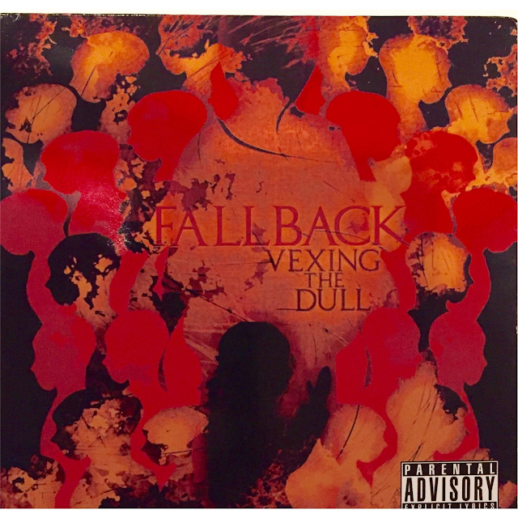

DISCOGRAPHY

Fallback (Self-Titled)
May 2008 • Toxic Metal Records
CD/DVD Combo • 16 tracks • 1 hr 12 min • UPC: 796873042901 • Available on CDBaby & iTunes
The self-titled debut album featuring the hit singles "Driven" and "Visegrip." The CD/DVD combo includes the music video for "Driven," a live show recorded at The Aquarium in Fargo, behind-the-scenes footage, and bonus content. Manufactured by Disc Makers.
"Rare form of raw, heavy energy laced with gripping melodies and dark hypnotic tones one can not ignore." — CD Baby listing, 2008
TRACKLIST
- Intro (2:19)
- Obvious (3:32)
- Cut Me Free (2:41)
- Dreams (4:15)
- (Choices) (2:18)
- Middle Of The Road (6:48)
- Driven (3:36) — Top Ten Loud City Charts
- National Override (3:59)
- Once Was (Goodbye) (4:35)
- Augapay (5:44)
- Shadows (5:11)
- Taken Over (4:55)
- Time Will Tell (5:13)
- Bronze (4:05)
- Visegrip (3:26) — Fan favorite, live show staple
- Uninvited (10:31)
DVD INCLUDES
- "Driven" Music Video
- Live at The Aquarium, Fargo
- Behind the Scenes Footage
- Bonus Content
THANK YOU LIST
God • My beautiful wife • My fellow bandmates • All Of Our Fans • Red Star Guitar and Drums • Kevin Racer • Pat Hewitt • Kasey • Broken Axe • Brian Grobs • The Nester • S.O.P • Hat • Venus In Furs • Rock Roots • Toxic Metal Records • All of my Friends • Rick's Bar • The Original • Raven Photography • The Reverend • Everyone that has ever supported us • Jarrod

Vexing the Dull EP
2010 • Independent Release
5 tracks • 21 min • Recorded at Cat House Studios (Sioux Falls, SD) & Signal Flow Studios (Minot, ND)
The follow-up EP, recorded in late 2008/2009 sessions at Cat House Studios (Sioux Falls, SD) and Signal Flow Studios (Minot, ND). Described by The Muse's Muse as "an impressive musical production from start to finish" with "passionate messages sung from a deeply honest perspective." Vocalist Jarrod Simek was compared to "Michael Patton (Faith No More) on steroids."
TRACKLIST
- Own Made Sin (4:14)
- Artificial Prodigy (4:15)
- Driven (3:35)
- Selfish Being (4:09)
- Suicide Red (5:05)
REVIEW SCORES
- Technical: 10/10
- Production/Musicianship: 9/10
- Overall Talent: 10/10
- Performance: 10/10
- Songwriting: 8/10
- Commercial Value: 8/10
— Cyrus Rhodes, The Muse's Muse (Nov 2010)